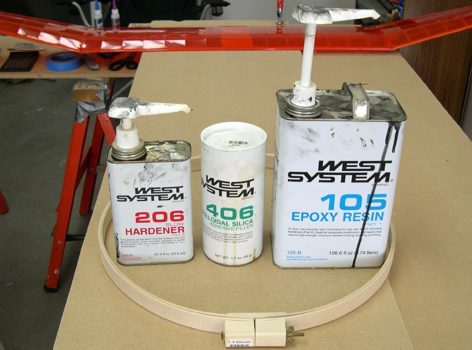

| Wood / Freestanding Coaming (2 of 8) | Menu Previous Page Next Page |
|
 Epoxy resin is mixed with a lightweight filler to bond the inner and outer hoops. The filler ( West Systems 406) thickens the resin, making it easier to work with while filling gaps between the hoops. |
|